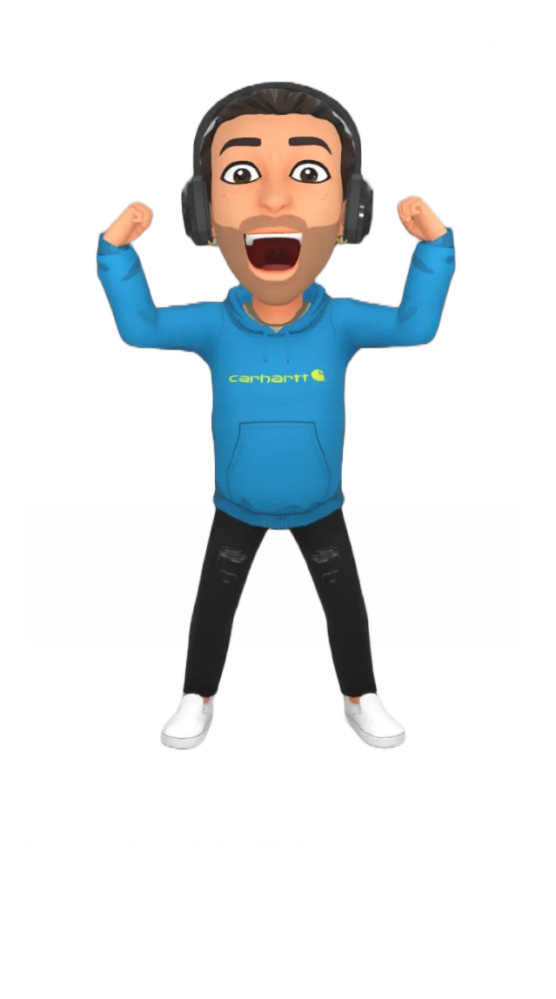

Daniel Agudelo
About
Magnam dolores commodi suscipit. Necessitatibus eius consequatur ex aliquid fuga eum quidem. Sit sint consectetur velit. Quisquam quos quisquam cupiditate. Et nemo qui impedit suscipit alias ea. Quia fugiat sit in iste officiis commodi quidem hic quas.

Skills
Necessitatibus eius consequatur ex aliquid fuga eum quidem sint consectetur velit
Resume
Magnam dolores commodi suscipit. Necessitatibus eius consequatur ex aliquid fuga eum quidem. Sit sint consectetur velit. Quisquam quos quisquam cupiditate. Et nemo qui impedit suscipit alias ea. Quia fugiat sit in iste officiis commodi quidem hic quas.
Daniel Agudelo
Portfolio
Explora una selección de mis proyectos y colaboraciones más destacados en desarrollo de software, aplicaciones web, móviles y soluciones tecnológicas a medida. Cada trabajo refleja mi compromiso con la calidad, la innovación y la satisfacción de mis clientes. ¡Descubre cómo puedo aportar valor a tu empresa o idea!
- TODO
- APP MOVIL
- APP WEB
- WEBSITES
- BACKEND
Services
Conoce lo que puedo hacer por ti y algunos de mis proyectos y colaboraciones.
Contact
¿Quieres que trabajemos juntos, tienes una consulta o deseas conocer más sobre mis servicios y experiencia? No dudes en contactarme a través de cualquiera de mis redes sociales. ¡Estoy disponible para nuevos proyectos, colaboraciones y asesorías!